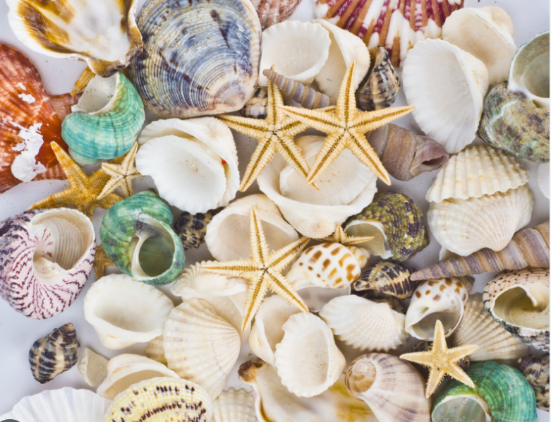

Seashell, hard exoskeleton of marine mollusks such as snails, bivalves, and chitons that serves to protect and support their bodies. It is composed largely of calcium carbonate secreted by the mantle, a skinlike tissue in the mollusk’s body wall. Seashells are usually made up of several layers of distinct microstructures that have differing mechanical properties. The shell layers are secreted by different parts of the mantle, although incremental growth takes place only at the shell margin. One of the most distinctive microstructures is nacre, or mother-of-pearl, which occurs as an inner layer in the shells of some gastropods and bivalves and in those of the cephalopods Nautilus and Spirula.
Seashells may be univalved (as in snails) or bivalved (as in clams), or they may be composed of a series of plates (as in chitons). They may also be reduced to small internal plates or granules, as in some slugs. In gastropods, bivalves, and shelled cephalopods, the coiled form of the shell approximates an equiangular spiral or variations of it. In some forms, such as the worm shells (family Vermetidae), however, the coiling of the shell is irregular. Shells are frequently ornamented with complex arrangements of spines, folia, ribs, cords, and grooves, which in some species provide protection against predators, give added strength, or assist in burrowing.